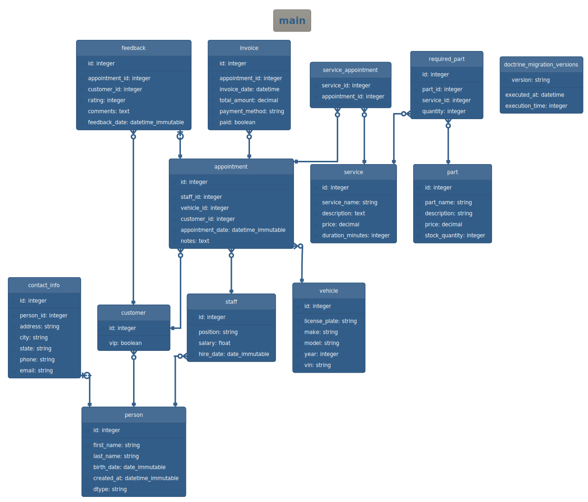
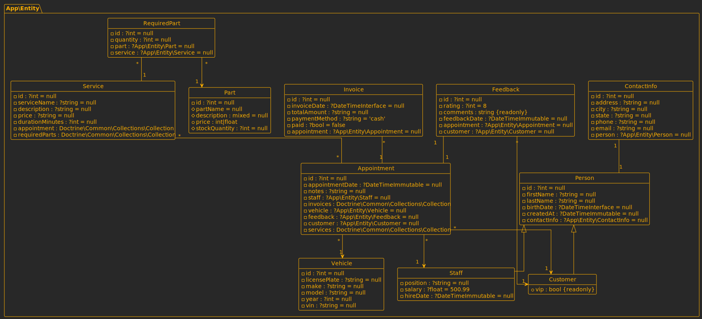

Configuration
How to configure the bundle
You have to ways to configure DoctrineDiagramBundle.
- Using a configuration file
config/packages/doctrine_diagram.yaml. - Using command's options.
Info
Command line options will always have priority over configuration file.
Command's options
Use help command to see available options for doctrine:diagram:er and
doctrine:diagram:class.
$ bin/console help doctrine:diagram:er
Options:
--filename=FILENAME Destination file name.
--format=FORMAT Diagram format (svg, png or puml).
--size=SIZE Diagram size (mini, midi or maxi).
--converter=CONVERTER Which strategy will be used to convert puml to another format (auto, jar or server).
--server=SERVER PlantUML server URL, used to convert puml diagrams to svg or png.
--jar=JAR Path to plantuml.jar, used to convert puml diagrams to svg or png.
--connection=CONNECTION Doctrine connection to use.
--theme=THEME Change diagram colors and style.
--exclude=EXCLUDE Comma separated list of tables to exclude from diagram.
$ bin/console help doctrine:diagram:class
Options:
--filename=FILENAME Destination file name.
--format=FORMAT Diagram format (svg, png or puml).
--size=SIZE Diagram size (mini, midi or maxi).
--converter=CONVERTER Which strategy will be used to convert puml to another format (auto, jar or server).
--server=SERVER PlantUML server URL, used to convert puml diagrams to svg or png.
--jar=JAR Path to plantuml.jar, used to convert puml diagrams to svg or png.
--em=EM Entity Manager to use.
--theme=THEME Change diagram colors and style.
--exclude=EXCLUDE Comma separated list of tables to exclude from diagram.
Tip
The commands doctrine:diagram:er and doctrine:diagram:class share
almost all the same options, the only difference is that
doctrine:diagram:er uses the --connection option, while
doctrine:diagram:class uses --em.
Configuration file
Configuration file is located at config/packages/doctrine_diagram.yaml, this
is a full configuration example:
doctrine_diagram:
er:
filename: '%kernel.project_dir%/er'
size: midi
theme: crt-amber
connection: ~
exclude:
- table1
- table2
class:
filename: '%kernel.project_dir%/class'
size: mini
theme: plain
em: ~
exclude:
- App\Entity\Client
- App\Entity\Feedback
convert:
format: svg
converter: auto
jar: /usr/bin/plantuml
server: 'http://www.plantuml.com/plantuml'
Use the following commands to see your current configuration and all available options:
Specify diagram name
By default, the diagram filename is er.svg for Entity-Relationship diagrams
and class.svg for Class diagrams.
The file extension is added automatically based on the chosen format.
You can modify the filename with the --filename option:
bin/console doctrine:diagram:er --filename=customers
bin/console doctrine:diagram:class --filename=employees
Alternatively, specify the filename in config/packages/doctrine_diagram.yaml:
doctrine_diagram:
er:
filename: '%kernel.project_dir%/customers'
class:
filename: '%kernel.project_dir%/employees'
Tip
You don't need to explicitly set filename extension, it's autmatically added according to selected diagram format.
Set diagram size
You can generate diagrams in different sizes:
- mini: Display only table or class names.
- midi: Include tables and columns for Entity-Relationship diagrams and classes and properties for Class diagrams.
- maxi: Show table names, columns, and views for Entity-Relationship diagrams. And classes, properties, and methods for Class diagrams.
Adjust the diagram size using the --size option:
Alternatively, set the diagram size in the config file:
Customizing themes
Use themes to change the look of your diagrams.
From the terminal, you can set the theme using --theme option.
bin/console doctrine:diagram:er --theme=sandstone
bin/console doctrine:diagram:class --theme=crt-amber
Alternatively, set the diagram size in the config file:
This is a complete list of available themes:
Please note that all themes might not be available in your system since themes are dependent of the version of PlantUML you have installed.
sandstone theme:

crt-amber theme:

Excluding tables and classes
To exclude specific tables from the ER diagram and classes from Class diagram,
use the --exclude option. Use comma to specify multiple values.
bin/console doctrine:diagram:er --exclude=table1,table2,table3
bin/console doctrine:diagram:class --exclude=App\\Entity\\Part
Note how, in the terminal, we had to escape the backslash character.
In the config file, use the exclude key to declare tables and classes you
want to omit:
Change the diagram format
Three formats are supported: png, svg, and puml.
You can set the format from the terminal using the --format option:
Alternatively, you can set the format in
config/packages/doctrine_diagram.yaml:
Tip
If you encounter difficulties generating your diagram, use the puml
format as it doesn't require PlantUML.
Specifying how to convert PlantUML diagrams
When generating diagrams, DoctrineDiagramBundle will always generate
diagrams in puml format first. If the requested format is puml, then the
diagram will be returned as is.
Otherwise, if the requested format is png or svg, you will need to
configure a "converter".
PlantUML can be used in two possible ways:
- As a local
plantuml.jarfile. - As a remote PlantUML server.
Use the following options to set the jar file.
You can achieve the same using the configuration file:
The other alternative to generate images is to use a remote PlantUML server:
You can achieve the same using the configuration file:
The recommended configuration is auto, with this setting
DoctrineDiagramBundle will search for plantuml.jar first , if
the jar file is not found then it will use a remote PlantUML server.
Please read the dedicated page about how to install PlantUML.